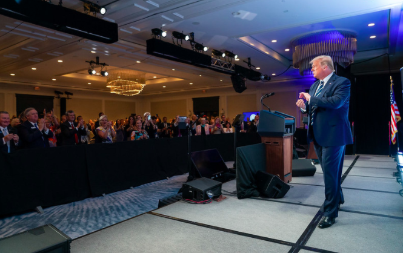

How Trump’s CIA used Bin Laden files and neocon think tank to escalate tensions with Iran
An ex-CIA analyst has raised suspicions about the Trump CIA’s release of bin Laden documents and apparent collaboration with the hard-right Foundation for Defense of Democracies (FDD) to demonize Iran.
By Ben Norton / AlterNet
The Central Intelligence Agency appears to have collaborated with the neoconservative think tank Foundation for Defense of Democracies to try to link Iran to the Salafi-jihadist group al-Qaeda.
Ned Price, a former CIA analyst and spokesman, has suggested that the move may be part of a wider campaign by the Trump administration’s new CIA director to establish 'a rationale for regime change' in Tehran.
In the lead-up to the illegal 2003 U.S. invasion of Iraq, the effort to link Baghdad to al-Qaeda was 'a key element of the march to war,' Price explained, implying that the Trump administration might be doing something similar with Iran.
President Donald Trump has, since the beginning of his term, made aggressive opposition to Iran a key feature of his foreign policy.He has surrounded himself with anti-Iran hawks in the White House, and pledged to unilaterally 'tear up' the nuclear deal agreed to by major world powers.
Saudi Arabia, a key U.S. proxy in the Middle East, has in recent weeks escalated its campaign against Iran.The Saudi monarchy pressured Lebanese Prime Minister Saad Hariri to resign, and has been accused of holding him hostage.The kingdom then effectively declared war on Lebanon, in the name of countering Iran and its ally Hezbollah.
President Trump has praised Saudi Arabia’s belligerent intervention and foreign meddling, even while accusing Tehran of doing exactly what Riyadh is doing.The U.S. government is working very closely with the Saudi monarchy and Israel to, in Trump’s words, 'counter the regime’s destabilizing activity.'
To justify these aggressive actions, the Trump administration has tried to link Iran to al-Qaeda.
The neoconservative think tank Foundation for Defense of Democracies published an article November 1 that aimed to highlight the alleged connections between the two.In order to do so, the staunch right-wing organization cited previously unreleased CIA documents that had allegedly been collected in the May 2011 U.S. raid on Osama bin Laden’s compound in Abbottabad, Pakistan.
The Foundation for Defense of Democracies (FDD) indicated in the post, 'The CIA provided FDD’s Long War Journal with an advance copy of many of the files.'
The right-wing think tank’s Long War Journal project subsequently stressed that the documents purportedly 'show Iran facilitated AQ at times.'The Long War Journal also claimed that several al-Qaeda leaders lived in Iran, where they were allegedly detained at the time.
Next, Long War Journal editors Thomas Joscelyn and Bill Roggio conducted a lengthy interview with conservative radio host John Batchelor, in which they hammered on bin Laden’s supposed connections to Iran.
FDD has for years advocated for aggressive U.S. action, including military options, against Iran.It is one of the leading anti-Iran voices in the Beltway’s constellation of neoconservative think tanks.Funded in the past by the billionaire Sheldon Adelson, a confidant of Donald Trump and Benjamin Netanyahu, FDD has been on the front lines of the campaign to undermine the Iran nuclear deal, which the far-right U.S. president has promised to 'tear up.'
Former CIA analyst Ned Price has spoken out about the agency’s apparent collaboration with FDD, highlighting the anxiety that is consuming a wing of the foreign policy establishment over Trump’s hostile moves against Iran.
Price served as a special assistant to former president Barack Obama and spokesperson for his administration’s National Security Council.He was also spokesman for former CIA Director John Brennan for a time.A harsh critic of President Trump, Price resigned in protest in February, after a decade in the CIA.
In a lengthy thread on Twitter, Price outlined what he believed were the real reasons behind the CIA’s document dump.
'I’m all for transparency, but this isn’t about that,' he wrote.Something more nefarious appears to be happening.
Price pointed out that the top of the U.S. intelligence community, the Office of the Director of National Intelligence, reported back in January that it had published the 'final Abbottabad documents.'The U.S. intelligence community was 'closing the book on bin Laden,' the DNI declared.
Intelligence officials had concluded at the time that all of the bin Laden documents 'of public interest were released,' Price said.'But a funny thing happened when CIA Director Pompeo came into office.I’m told he re-launched a review of the files.'
Price emphasized that Mike Pompeo, who enjoys a close relationship with President Trump, is 'the administration’s leading and most influential Iran hawk.'
In an op-ed in Fox News in 2016, Pompeo, then a congressman, lashed out at the Iranian nuclear deal and insisted 'Congress must act to change Iranian behavior, and, ultimately, the Iranian regime.'
The release of further bin Laden documents is clearly a CIA effort, Price pointed out, because the new records are hosted on the CIA’s website, not on the DNI’s.
Why would Pompeo put so much effort into doing this?'It seems he’s convinced the unreleased files would tie al-Qa’ida to Iran,' Price explained.
In a Fox News interview this September, Pompeo confirmed his intentions when he announced the impending release of the bin Laden documents.'Iran has always made a devil’s bargain with al-Qaeda to protect them in many ways,' the CIA director declared.
Ned Price warned that Mike Pompeo’s 'moves suggest he’s reverting to the Bush administration’s playbook: Emphasize terrorist ties as a rationale for regime change.'
Price also implied that Trump’s CIA may be exaggerating Iran’s ties to al-Qaeda in order to justify U.S. military action, recalling how former vice president Dick Cheney had tried to link the government of Saddam Hussein to al-Qaeda.
Much of the Bush administration’s argument rested on the claim that 9/11 hijacker Mohamed Atta had supposedly met with an Iraqi intelligence official in Prague before the September 11, 2001 attacks.
'It was a key element of the march to war,' Price emphasized.
Months into the Iraq War, the Washington Post noted that this 'story was falling apart under scrutiny by the FBI, CIA and the foreign government that first made the allegation,' even though this supposed Prague meeting 'was the single thread the administration has pointed to that might tie Iraq to the [9/11] attacks.'
'History doesn’t repeat itself, but it does rhyme,' Price wrote.He concluded with a warning: 'Need to remain vigilant to ensure Pompeo isn’t able to write it.'
AlterNet reached out to the CIA with a request for comment.The agency did not reply as of the time of publication.
Trita Parsi, an analyst and president of the National Iranian American Council, told AlterNet that, under Trump, 'There’s a clear political intent to ratchet up tensions with Iran and prepare the grounds to sell the American public war with Iran or at a minimum, a much more confrontational line.'
'As the nuclear issue has been resolved and cannot be used as a casus belli since the Iranians are abiding by the agreement, there is a search for another pretext to drive the situation towards a confrontation,' said Parsi, the author of Losing an Enemy: Obama, Iran and the Triumph of Diplomacy, a detailed insider’s account of the Iran deal negotiations.
'The selective focus on Iran’s alleged support to Al Qaeda seems to fit this bill,' Parsi added.'If the U.S. was serious about defeating Al Qaeda and ISIS, it would clamp down on Saudi Arabia’s financial, ideological and logistical support for the terror networks.Instead, Trump is unreservedly hugging the Saudis and focusing on Iran — a longstanding enemy of Al Qaeda.'
The CIA’s links to the FDD go beyond the agency’s providing it with unreleased documents.And Mike Pompeo’s personal ties to the think tank go even further.
The CIA director spoke at FDD’s National Security Summit, on October 19.He was interviewed for more than an hour there by Juan Zarate, a former top Bush administration official who now serves as chairman and senior counselor of FDD’s Center on Sanctions and Illicit Finance.
Iran was the primary subject of discussion.The terms 'Iran,' 'Iranian' or 'Iranians' were mentioned 43 times in the interview.
FDD’s Zarate insisted Pompeo 'is doing great work at the CIA,' and disclosed his close ties to the CIA director, revealing that he had in fact worked on Pompeo’s transition.
Under George W. Bush, Zarate was deputy national security advisor for combating terrorism and an assistant to the president.Before that, he was assistant secretary of the Treasury for terrorist financing and financial crimes.According to his White House bio, Juan Zarate 'led the U.S. government’s global efforts to hunt Saddam Hussein’s assets, resulting in the return of over $3 billion of Iraqi assets from the U.S. and around the world.'
Zarate began his FDD National Security Summit interview fawning over Pompeo.'There’s no secret here: I’m not an unbiased journalist.I’m a fan of this director.I worked on his transition.Frankly, I love the man,' Zarate said.'I believe in the Weberian concept of putting your biases out front before beginning the questions.'
Zarate made the primary goal of the interview clear right off the bat: His first question was about Iran.Pompeo replied by immediately warning of 'the threat the Islamic Republic of Iran represents to the United States.'
'The president has come to view the threat from Iran as at the center of so much of the turmoil that bogs us down in lots of places in the Middle East,' the CIA director said.'And from an intelligence perspective, we shared that with the president.'
The Iran nuclear deal was not 'satisfactory to' Trump, Pompeo explained.'So he asked us all to go evaluate how we might present a more comprehensive effort to push back against the Quds Force, the IRGC more broadly, and the Iranian regime itself.'
'How do we push back?'Zarate asked.Pompeo called for using 'all the tools available of U.S. power,' working with 'the Saudis, the Emirates, the Israelis,' and taking action against the Iranian economy.
In his interview with Pompeo, Zarate zeroed in on the supposed Iran-Al Qaeda connection.
'I thought that was interesting, in part because we’ve known, all along, that there have been links between the two,' Zarate said.The FDD think-tanker even attempted to link Iran to the 9/11 attacks.
'I think it’s an open secret, and not classified information, that there have been relationships, there are connections.There have been times the Iranians have worked alongside Al Qaeda,' Pompeo responded, again without providing evidence.
'We actually, the CIA is going to release, here, in the next handful of days, a series of documents related to the Abbottabad raids that may prove interesting to those who are looking to take at this issue—take a look at this issue a little bit further,' Pompeo added — foreshadowing the publication of the FDD’s report two weeks later.
Pompeo went on to ludicrously suggest that Iran, ISIS and al-Qaeda in Syria’s extremist rebel-held Idlib province might 'work together for a common threat against the United States.'In reality, it was U.S. allies Saudi Arabia, Qatar and Turkey that supported ISIS, al-Qaeda and other extremist groups in Syria.Iran has allied with the Syrian government against these Salafi-jihadist militias.
In Syria, Pompeo noted, President Trump’s goal is 'to push back not only against Iran, but the Syrian regime.'The CIA director did not mention that the government of Syrian leader Bashar al-Assad, has in fact been leading the fight against ISIS and al-Qaeda, most recently liberating the city of Deir Ezzor from a three year-long siege by ISIS.
The emerging reality on the ground in Syria explodes the conspiracy theories advanced by neoconservatives that Iran and the Syrian government have supported the very same Salafi-jihadist groups they have been fighting.But that hasn’t stopped these elements from doubling down in order to drum up war with Iran and its allies.
Pompeo was not the only high-level Trump administration official who demonized Iran at the FDD National Security Summit.National Security Advisor H.R. McMaster also sat down for hour-long interview with FDD CEO Mark Dubowitz.
McMaster’s FDD interview was even more heavily focused on Iran than Pompeo’s.In all, the words 'Iran,' 'Iranian' or 'Iranians' were said a staggering 94 times.
Like Pompeo, McMaster immediately began his remarks by discussing the Trump administration’s 'comprehensive strategy for the problem set associated with Iran.'He added, 'our strategy integrates all elements of national power, and is oriented on neutralizing the government of Iran’s destabilizing influence, and constraining its aggression.'
McMaster condemned Iran for 'sustain[ing] the murderous Assad regime in Syria.'
As the CIA director had done in his interview, the White House national security advisor lavished praise on the neoconservative think tank and its CEO, who has been intimately involved in drumming up support for sanctions in Iran: 'I love Mark Dubowitz, and I love FDD.'
'I’m a huge admirer of Juan [Zarate] as well,' McMaster declared, noting that the former Bush official has 'been a friend, mentor, example for me for, as he’s mentioned, across my entire professional life.'
'I want to thank FDD for the work it’s done over the years on so many critical issues, including the early work on the threat posed by radical Islamist ideology,' McMaster gushed.
The U.S. national security advisor made it clear that the neoconservative organization had informed the Trump administration’s policy: 'We have drawn heavily on the scholarship and analysis of FDD, and other think tanks and academic institutions as well as we developed integrated strategies over the past months.'
McMaster even asked for help from the notorious right-wing think tank: 'We need FDD’s help and we need the help of all of you here.We need organizations like FDD to continue their scholarship on the threats that we face.And we need our media, our press, investigative reporters to look hard at countries like Iran and North Korea, and help inform the world about how these road regimes skirt sanctions, flout international norms, brutalize their own people and manage their neighbors.'
He added, 'With the knowledge that you and others help bring to light about these threats, America can act with confidence.'
Posted On: 2017-11-10T00:00:00
Posted By: Ben Norton

Content Date: 2017-11-10
Download Date: 2021-05-07
Document ID: L0C04AVIV